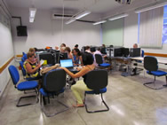

Centro Estadual de Educação Tecnológica Paula Souza
Sobre o CEETEPS
O Centro Estadual de Educação Tecnológica Paula Souza
(CEETEPS) é uma autarquia do governo do estado de São Paulo vinculada à Secretaria de Desenvolvimento Econômico, Ciência e Tecnologia que administra as Escolas Técnicas Estaduais (ETEC)
(ETEC)
e as Faculdades de Tecnologia (FATEC)
(FATEC)
do mesmo estado.
A instituição foi idealizada em 1963 e começou as suas atividades em 1969. A denominação "Centro Paula Souza" aconteceu em 1971 para homenagear Francisco de Paula Souza, fundador da Escola Politécnica da Universidade de São Paulo.
A sede do Centro Paula Souza está localizada no prédio que era utilizado por essa instituição até a transferência desta para a "Cidade Universitária".
Centro Estadual de Educação Tecnológica Paula Souza
Rua dos Andradas, 140 - Santa Ifigênia
Telefone: (11) 3324-3300
Site:
http://www.centropaulasouza.sp.gov.br
Sobre a FATEC-BS

A Faculdade de Tecnologia da Baixada Santista - Rubens Lara (FATEC/BS) situa-se na cidade de Santos, no litoral da Baixada Santista e foi implantada em julho de 1987 como uma unidade do Centro Estadual de Educação Tecnológica Paula Souza, instituição de ensino Superior.
O primeiro curso a ser oferecido foi o de Tecnologia em Processamento de Dados, reconhecido através da Portaria 354, de 9 de março de 1994.
Cursos de Graduação da FATEC-BS
- Análise de Sistemas(ADS)
- Sistemas Para Internet(SI)
- Gestão Empresarial (GE)
- Gestão Portuária (GP)
- Logística (LOG)
- Gestão Empresarial EAD (GE - EAD)
FATEC Baixada Santista - Rubens Lara
Av. Bartolomeu de Gusmão, 110 - Aparecida
Telefone: (13) 3227-6003
Site:
http://www.fatecrl.edu.br